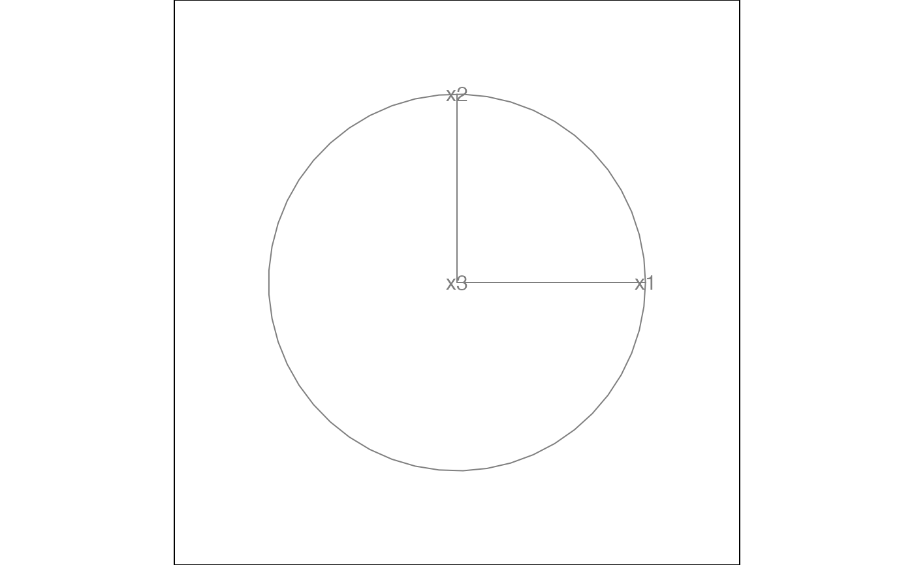
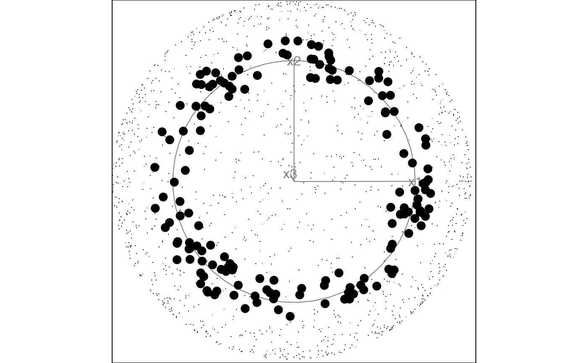

The guided section tour is a variation of the guided tour that is using a section pursuit index for the selection of target planes.
Usage
guided_section_tour(
index_f,
d = 2,
alpha = 0.5,
cooling = 0.99,
max.tries = 25,
max.i = Inf,
v_rel = NULL,
anchor = NULL,
search_f = search_geodesic,
...
)Arguments
- index_f
the section pursuit index function to optimise. The function needs to take three arguments, the projected data, the vector of distances from the current projection plane, and the slice thickness h.
- d
target dimensionality
- alpha
the initial size of the search window, in radians
- cooling
the amount the size of the search window should be adjusted by after each step
- max.tries
the maximum number of unsuccessful attempts to find a better projection before giving up
- max.i
the maximum index value, stop search if a larger value is found
- v_rel
relative volume of the slice. If not set, suggested value is calculated and printed to the screen.
- anchor
A vector specifying the reference point to anchor the slice. If NULL (default) the slice will be anchored at the data center.
- search_f
the search strategy to use
- ...
arguments sent to the search_f
Details
Usually, you will not call this function directly, but will pass it to
a method that works with tour paths like animate_slice,
save_history or render.
See also
slice_index for an example of an index functions.
search_geodesic, search_better,
search_better_random for different search strategies
Examples
# Generate samples on a 3d hollow sphere using the geozoo package
set.seed(12345)
sphere3 <- geozoo::sphere.hollow(3)$points
# Columns need to be named before launching the tour
colnames(sphere3) <- c("x1", "x2", "x3")
# Off-center anchoring
anchor3 <- matrix(rep(0.75, 3), ncol=3)
# Index setup
r_breaks <- linear_breaks(5, 0, 1)
a_breaks <- angular_breaks(10)
eps <- estimate_eps(nrow(sphere3), ncol(sphere3), 0.1 / 1, 5 * 10, 10, r_breaks)
idx <- slice_index(r_breaks, a_breaks, eps, bintype = "polar", power = 1, reweight = TRUE, p = 3)
#> Reweighting assuming p=3
#> Rescaling raw index by a factor 1.11111111111111
# Running the guided section tour select sections showing a big hole in the center
animate_slice(sphere3, guided_section_tour(idx, v_rel = 0.1, anchor = anchor3, max.tries = 5),
v_rel = 0.1, anchor = anchor3
)
#> Using half_range 1
#> Target: 0.784, 11.8% better
#> Using half_range 1
#> Using v_rel=0.1, corresponding to a cutoff h=0.1

